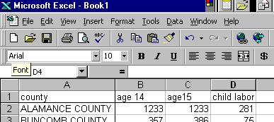
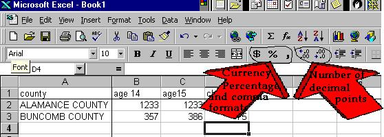

This page is hosted on AFS file server space, which is being shut down on November 13, 2018.
If you are seeing this message, your service provider needs to take steps now.
Visit afs.unc.edu for more information.
Excel
Tips
This page provides some
hints for working effectively with Excel.
Slow
down! Pressing lots of buttons as
you try to recover will often just get you into more trouble. So
will repeating your last mistake. Try to take your hands off the
mouse and the keyboard, and think about what's gone wrong.
Type
any totals you know. You'll
learn how to calculate totals automatically. But sometimes it's easier
to check totals than every individual entry. So use any information
your sources have given you as an easy check on your data entry.
Type
short titles directly above your data.
Keeping your titles short means you never have to widen a column just to
find out what it is. Keeping titles in the cell directly above the
data means Excel will recognize them as titles in later work:

Make
numbers easier to read. You
can format numbers in literally dozens of ways. Two of the most common
are: Comma Format, and Currency Format. Excel provides buttons for
you to use:

Comma
(the symbol) puts commas in between the thousands, making pure numbers
easier to see. It often also adds two decimal points. Get rid
of them by selecting the cells with the extra decimal points, and press
the button with an arrow pointing to on .0 above. The same approach
works with the dollar (the $ symbol).
Having
trouble with the mouse? Use the keyboard.
Some people find all this clicking annoying, difficult or just plain slow.
Get to know keyboard shortcuts instead. We don't have room to go
through all of them, but go into Excel's Help system, and in the Index
look for "Keyboard shortcuts."